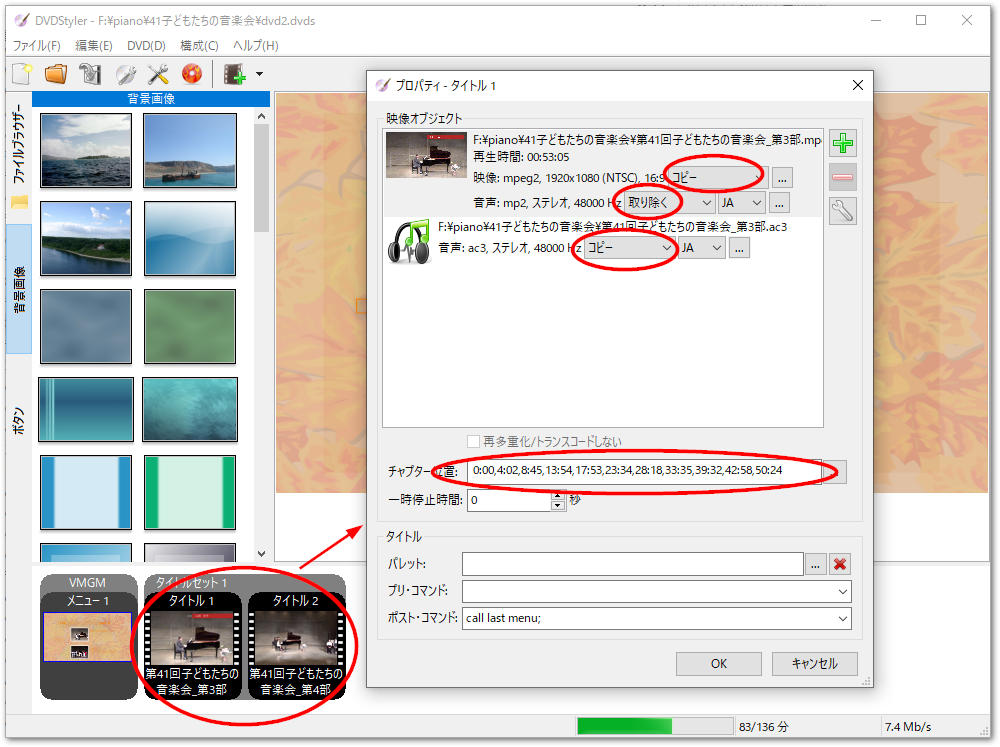

4. DVDオーサリング#
DVDStylerを用いたDVDオーサリング手順について示します。
- 高画質・高音質でオーサリングする
あらかじめ kdenliveで出力したmpeg2の動画と、ac3形式の音声ファイルを加工せずに「コピー」設定すると、編集ソフトから出力して加工しないままDVD videoで再生可能なフォーマットでオーサリングすることができます。
- チャプターの設定
チャプタ割の調査シート作成で作成したチャプタ頭出しシートに基づいて、
チャプタ位置欄に秒までの精度でカンマ区切りで記載します。ファイル毎に0:00からスタートする時刻で記述してください。
